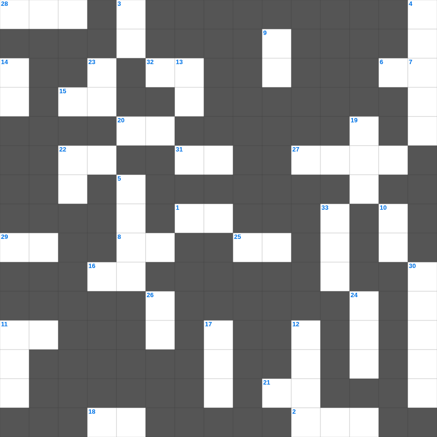

창세기(개역한글) 인물과 사건
📌 서비스 정의
십자가로세로는 교회 주보와 주일학교에서 사용할 수 있는 성경 기반 가로세로 퍼즐 서비스입니다. 성경 인물, 사건, 핵심 구절을 바탕으로 제작되었습니다. 온라인 풀이 및 인쇄 기능을 제공합니다.
📖 이 글은 어떤 내용인가요?
창세기는 천지창조부터 이스라엘 민족의 기원이 되는 인물들의 이야기를 담고 있습니다. 아담과 하와, 노아, 아브라함, 이삭, 야곱, 요셉으로 이어지는 인물들의 계보와 그들이 겪은 주요 사건들은 구약 전체의 기초가 됩니다. 이 퍼즐은 개역한글 본문을 바탕으로 창세기의 인물과 사건을 정리합니다.
📚 핵심 포인트
아담과 하와의 창조와 타락 · 노아와 홍수 심판 · 아브라함의 언약 · 이삭과 야곱의 이야기 · 요셉과 이집트 이주
오늘은 창세기(개역한글)의 주요 내용을 담은 창세기(개역한글) 주일학교 퀴즈를 준비했습니다. 총 35개의 힌트가 있으며, 주일학교 교재나 성경공부 자료로 활용하기 좋습니다. 무료로 즐기는 창세기(개역한글) 가로세로 퍼즐을 지금 바로 풀어보세요!

📝 가로 힌트
1. 이삭의 큰 아들
2. 이삭의 아내
6. 야곱의 아내
8. 절기와 때
11. 야곱의 아들
15. 뭍이 드러난 곳
16. 상수리나무 있던 곳
18. 요셉이 풀어 준 것
20. 에노스의 아들
21. 라멕의 아내
22. 가인이 낳은 아들
25. 에서가 먹은 것
27. 하갈의 아들
28. 특이한 사냥꾼
29. 가인의 아우
31. 하나님의 신이 움직이심
32. 에덴의 둘째 강
📝 세로 힌트
3. 요셉이 갇힌 곳
4. 이삭을 드리라 하신 땅
5. 므후야엘의 후손
7. 방주가 머문 산
9. 땅을 덮은 심판
10. 돌 대신 사용
11. 아브라함의 옛 이름
12. 야곱이 본 것
13. 땅의 상태, 질서 없음
14. 광명으로 된 표
17. 벗었으므로 느낌
19. 방주에서 내보낸 새
22. 에서의 별명
23. 하늘과 땅
24. 비손이 두른 땅
26. 땅이 있을 동안 계속
30. 아브라함이 부른 이름
33. 야곱의 막내 아들
🧩 이 퍼즐에서 배우는 내용
이 퍼즐은 창세기(개역한글) 인물과 사건의 핵심 단어와 개념을 자연스럽게 복습할 수 있도록 구성되었습니다. 주일학교 수업이나 개인 성경공부에서 학습 내용을 점검하는 용도로 바로 활용할 수 있습니다.
🧑🏫 교회 교육 자료 활용
이 퍼즐은 주일학교 교재 추천 자료로 활용할 수 있고, 주일학교 주보에 넣기 좋은 분량으로 구성되어 있습니다. 수업용 주일학교 교안에 활동지로 붙이거나, 예배 후 복습용 주일학교 공과교재로 바로 사용할 수 있습니다.
🏷️ 키워드
창세기(개역한글) 주일학교 퀴즈, 창세기(개역한글), 십자가로세로, 성경퀴즈, 말씀퀴즈, 가로세로퍼즐, 주일학교 교재 추천, 주일학교 주보, 주일학교 교안, 주일학교 공과교재